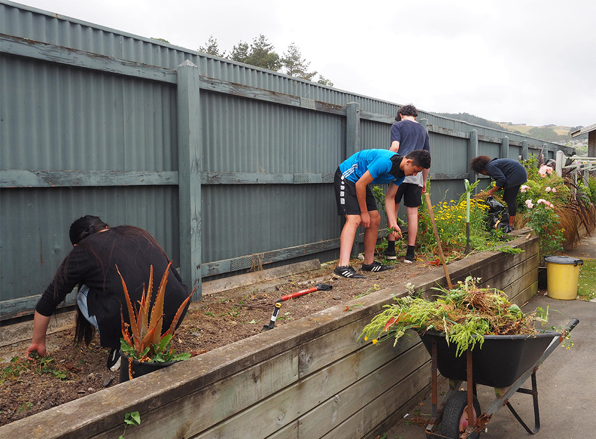
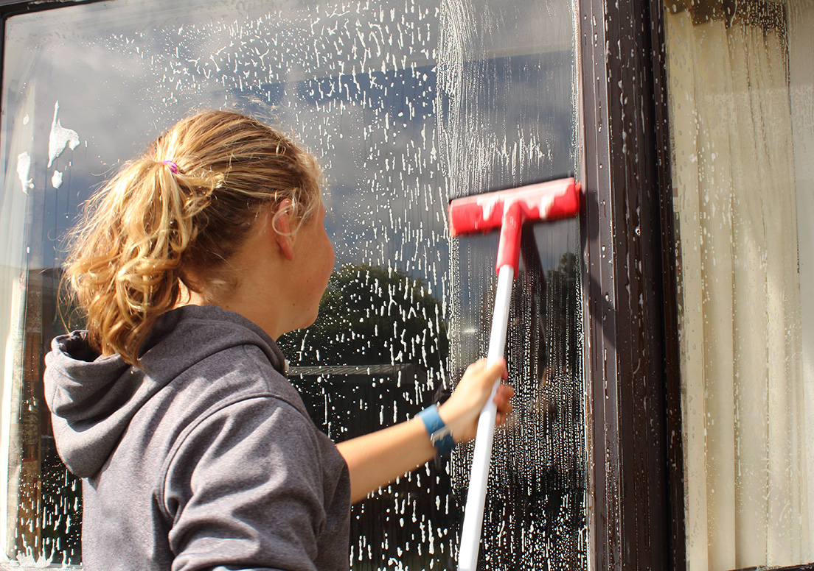
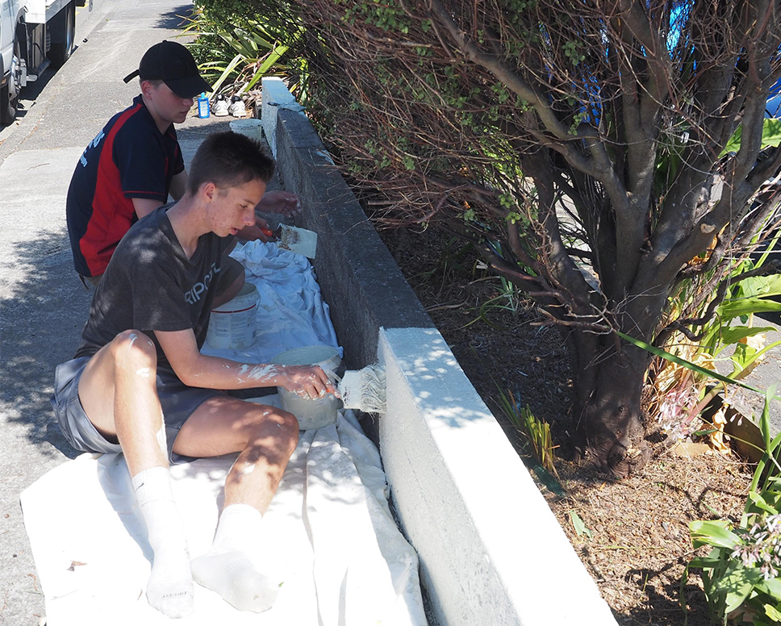

Community Service
Team Building | Mahi Tahi

How will this work?
Students will complete one day of community service assisting local residents
and businesses. This will usually occur within walking distance of Tawa College for
all Year 10 students. This day has the key focus of citizenship and has been a
great success in previous years.

What do I need to know?
• Meeting time and location: The school gym at 9.15am
• What to bring: A day pack with your lunch, water bottle, sun hat, a
warm jumper and rain jacket if the weather forecast is bad.
• It will still go ahead unless there is torrential rain. Please wear
appropriate old clothes for potential gardening/painting jobs and
closed toed shoes. Bring any medication required.
